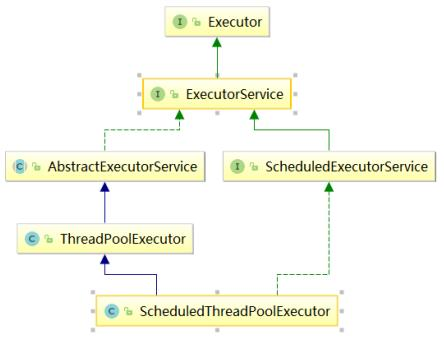
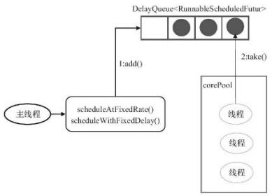

原文连接:https://www.cnblogs.com/xiaoqiang-code/p/11432936.html
之前学习ThreadPool的使用以及源码剖析，并且从面试的角度去介绍知识点的解答。今天小强带来周期性线程池的使用和重点源码剖析。
ScheduledThreadPoolExecutor
ScheduledThreadPoolExecutor：用来处理延时任务或定时任务
定时线程池类的类结构图

ScheduledThreadPoolExecutor接收ScheduleFutureTask类型的任务，是线程池调度任务的最小单位。
它采用DelayQueue存储等待的任务：
1、DelayQueue内部封装成一个PriorityQueue，它会根据time的先后时间顺序，如果time相同则根绝sequenceNumber排序；
2、DelayQueue是无界队列；

ScheduleFutureTask
接收的参数:
private final long sequenceNumber;//任务的序号
private long time;//任务开始的时间
private final long period;//任务执行的时间间隔工作线程的的执行过程：
工作线程会从DelayQueue取出已经到期的任务去执行；
执行结束后重新设置任务的到期时间，再次放回DelayQueue；
ScheduledThreadPoolExecutor会把待执行的任务放到工作队列DelayQueue中，DelayQueue封装了一个PriorityQueue，PriorityQueue会对队列中的ScheduledFutureTask进行排序，具体的排序算法实现如下：
public int compareTo(Delayed other) {
if (other == this) // compare zero if same object
return 0;
if (other instanceof ScheduledFutureTask) {
ScheduledFutureTask<?> x = (ScheduledFutureTask<?>)other;
//首先按照time排序，time小的排到前面，time大的排到后面
long diff = time - x.time;
if (diff < 0)
return -1;
else if (diff > 0)
return 1;
//time相同，按照sequenceNumber排序;
//sequenceNumber小的排在前面,sequenceNumber大的排在后面
else if (sequenceNumber < x.sequenceNumber)
return -1;
else
return 1;
}
long diff = getDelay(NANOSECONDS) - other.getDelay(NANOSECONDS);
return (diff < 0) ? -1 : (diff > 0) ? 1 : 0;
}接下来看看ScheduledFutureTask的run方法实现， run方法是调度task的核心，task的执行实际上是run方法的执行。
public void run() {
//是否是周期性的
boolean periodic = isPeriodic();
//线程池是shundown状态不支持处理新任务，直接取消任务
if (!canRunInCurrentRunState(periodic))
cancel(false);
//如果不需要执行执行周期性任务，直接执行run方法结束
else if (!periodic)
ScheduledFutureTask.super.run();
//如果需要周期性执行，则在执行任务完成后，设置下一次执行时间
else if (ScheduledFutureTask.super.runAndReset()) {
//设置下一次执行该任务的时间
setNextRunTime();
//重复执行该任务
reExecutePeriodic(outerTask);
}
}run方法的执行步骤：
- 1、如果线程池是shundown状态不支持处理新任务，直接取消任务，否则步骤2；
- 2、如果不是周期性任务，直接调用ScheduledFutureTask的run方法执行，会设置执行结果，然后直接返回，否则步骤3；
- 3、如果是周期性任务，调用ScheduledFutureTask的runAndset方法执行，不会设置执行结果，然后直接返回，否则执行步骤4和步骤5；
- 4、计算下一次执行该任务的时间；
- 5、重复执行该任务；
接下来看下reExecutePeriodic方法的执行步骤：
void reExecutePeriodic(RunnableScheduledFuture<?> task) {
if (canRunInCurrentRunState(true)) {
super.getQueue().add(task);
if (!canRunInCurrentRunState(true) && remove(task))
task.cancel(false);
else
ensurePrestart();
}
}由于已经执行过一次周期性任务，所以不会reject当前任务，同时传入的任务一定是周期性任务。
周期性线程池任务的提交方式
周期性有三种提交的方式：schedule、sceduleAtFixedRate、schedlueWithFixedDelay。下面从使用和源码两个方面进行说明，首先是如果提交任务：
pool.schedule(new Runnable() {
@Override
public void run() {
System.out.println("延迟执行");
}
},1, TimeUnit.SECONDS);
/**
* 这个执行周期是固定，不管任务执行多长时间，每过3秒中就会产生一个新的任务
*/
pool.scheduleAtFixedRate(new Runnable() {
@Override
public void run() {
//这个业务逻辑需要很长的时间，超过了3秒
System.out.println("重复执行");
}
},1,3,TimeUnit.SECONDS);
pool.shutdown();
/**
* 假如run方法30min后执行完成，然后间隔3秒，再周期性执行下一个任务
*/
pool.scheduleWithFixedDelay(new Runnable() {
@Override
public void run() {
//30min
System.out.println("重复执行");
}
},1,3,TimeUnit.SECONDS);知道了如何提交周期性任务，接下来源码是如何执行的，首先是schedule方法，该方法是指任务在指定延迟时间到达后触发，只会执行一次。
public ScheduledFuture<?> schedule(Runnable command,
long delay,
TimeUnit unit) {
if (command == null || unit == null)
throw new NullPointerException();
//把任务封装成ScheduledFutureTask，之后调用decorateTask进行包装；
//decorateTask方法是空方法，留给用户去实现的；
RunnableScheduledFuture<?> t = decorateTask(command,
new ScheduledFutureTask<Void>(command, null,
triggerTime(delay, unit)));
//包装好任务之后，进行任务的提交
delayedExecute(t);
return t;
}任务提交方法：
private void delayedExecute(RunnableScheduledFuture<?> task) {
//如果线程池不是RUNNING状态，则使用拒绝策略把提交任务拒绝掉
if (isShutdown())
reject(task);
else {
//与ThreadPoolExecutor不同，这里直接把任务加入延迟队列
super.getQueue().add(task);
//如果当前状态无法执行任务，则取消
if (isShutdown() &&
!canRunInCurrentRunState(task.isPeriodic()) &&
remove(task))
task.cancel(false);
else
//和ThreadPoolExecutor不一样，corePoolSize没有达到会增加Worker;
//增加Worker，确保提交的任务能够被执行
ensurePrestart();
}
}还没关注我的公众号？
- 扫文末二维码关注公众号【小强的进阶之路】可领取如下:
- 学习资料： 1T视频教程：涵盖Javaweb前后端教学视频、机器学习/人工智能教学视频、Linux系统教程视频、雅思考试视频教程；
- 100多本书：包含C/C++、Java、Python三门编程语言的经典必看图书、LeetCode题解大全；
- 软件工具：几乎包括你在编程道路上的可能会用到的大部分软件；
- 项目源码：20个JavaWeb项目源码。